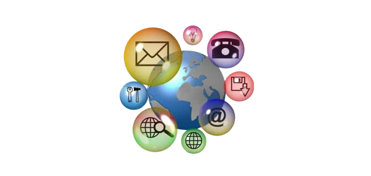
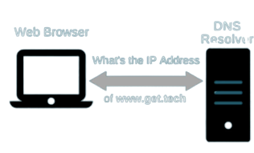
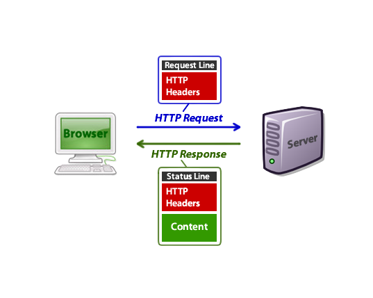

Servicios de internet y Etapas entre el
Servicios de
Internet para navegación Web
La Web es la forma principal que existe en Internet para transmitir información con enormes posibilidades comerciales implícitas asegurando su futuro.

Internet es mucho más que la WWW, la red posee una serie de servicios que, en mayor o menor medida, tienen que ver con las funciones de información, red de ordenadores y servicioscomunicación e interacción.
Algunos de los servicios disponibles en Internet aparte de la Web son:
El correo electrónico y los boletines de noticias Usenet fueron las primeras formas de comunicación que se usaron sobre Internet, pero la red ofrece hoy una amplia gama de instrumentos y contextos para el acceso y la recuperación de documentos, la comunicación y la interacción.
Además, el acceso y la distribución de información ya no se limitan al texto en código ASCII, como en los primeros tiempos de Internet, sino que abarcan todas las morfologías de la información: texto, imagen, audio, vídeo, recursos audiovisuales, etc.
En Internet también se puede escuchar la radio, ver la televisión, asistir a un concierto, visitar un museo o jugar a través de la red. El empleo del Internet ha crecido exponencialmente gracias a muchos de estos usos y, especialmente, por la facilidad de manejo que permite hoy la propia World Wide Web.
Así pues, existen unos servicios que permiten el intercambio de mensajes personales (correo electrónico, grupos de noticias, listas de distribución, foros, etc.), otros adecuados para la interacción mediante conversaciones en tiempo real (chats) y otros dedicados al suministro y acceso a la información (World Wide Web, FTP, etc.).

VIDEO 1
Te dejemos un video para que puedas entender mejor sobre el tema y asi no quede ninguna duda respecto a este.
Cuando escribes una dirección web en el navegador (usando nuestra analogía para ir a la tienda):
-
El navegador va al servidor DNS y encuentra la dirección real del servidor donde el sitio web vive (encontrar la dirección de la tienda).
 -
El navegador envía un mensaje de petición HTTP al servidor, pidiéndole que envíe una copia de la página web para el cliente (ir a la tienda y hacer un pedido). Este mensaje y todos los datos enviados entre el cliente y el servidor, se envían a través de tu conexión a Internet usando TCP/IP.
-
Siempre que el servidor apruebe la solicitud del cliente, el servidor enviará al cliente un mensaje «200 OK», que significa, «¡por supuesto que puedes ver ese sitio web! Aquí está.», y comenzará a enviar los archivos de la página web al navegador como una serie de pequeños trozos llamados paquetes de datos (la tienda te entrega tus productos y los llevas de regreso a casa).
 -
El navegador reúne los pequeños trozos, forma un sitio web completo y te lo muestra (llegas a casa con tus nuevas compras).
VIDEO 2
Nuevamente te dejemos un video para que puedas entender mejor sobre el tema y asi no quede ninguna duda respecto a este.